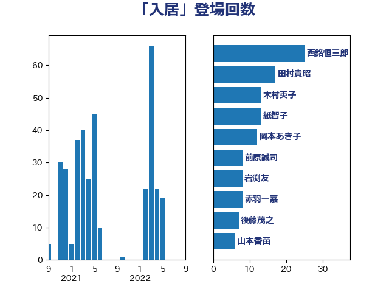

単語「入居」

| 西銘恒三郎 | 自由民主党 | 25 回 |
| 田村貴昭 | 日本共産党 | 17 回 |
| 木村英子 | れいわ新選組 | 13 回 |
| 紙智子 | 日本共産党 | 13 回 |
| 岡本あき子 | 立憲民主党 | 12 回 |
| 前原誠司 | 国民民主党 | 8 回 |
| 岩渕友 | 日本共産党 | 8 回 |
| 赤羽一嘉 | 公明党 | 8 回 |
| 後藤茂之 | 自由民主党 | 7 回 |
| 山本香苗 | 公明党 | 6 回 |
| 階猛 | 立憲民主党 | 6 回 |
| 高橋千鶴子 | 日本共産党 | 6 回 |
| 岡本三成 | 公明党 | 5 回 |
| 芳賀道也 | 国民民主党 | 5 回 |
| 赤嶺政賢 | 日本共産党 | 5 回 |
| 長峯誠 | 自由民主党 | 5 回 |
| 中島克仁 | 立憲民主党 | 4 回 |
| 山井和則 | 立憲民主党 | 4 回 |
| 平沢勝栄 | 自由民主党 | 4 回 |
| 斉藤鉄夫 | 公明党 | 4 回 |
| 塩田博昭 | 公明党 | 3 回 |
| 山崎誠 | 立憲民主党 | 3 回 |
| 打越さく良 | 立憲民主党 | 3 回 |
| 柚木道義 | 立憲民主党 | 3 回 |
| 櫛渕万里 | れいわ新選組 | 3 回 |
| 白石洋一 | 立憲民主党 | 3 回 |
| 伊藤俊輔 | 立憲民主党 | 2 回 |
| 伊藤岳 | 日本共産党 | 2 回 |
| 城井崇 | 立憲民主党 | 2 回 |
| 宮本徹 | 日本共産党 | 2 回 |
| 梅村聡 | 日本維新の会 | 2 回 |
| 梶山弘志 | 自由民主党 | 2 回 |
| 森まさこ | 自由民主党 | 2 回 |
| 足立敏之 | 自由民主党 | 2 回 |
| 道下大樹 | 立憲民主党 | 2 回 |
| こやり隆史 | 自由民主党 | 1 回 |
| 上月良祐 | 自由民主党 | 1 回 |
| 中川宏昌 | 公明党 | 1 回 |
| 中野英幸 | 自由民主党 | 1 回 |
| 古川元久 | 国民民主党 | 1 回 |
| 吉川赳 | 無所属 | 1 回 |
| 和田政宗 | 自由民主党 | 1 回 |
| 国定勇人 | 自由民主党 | 1 回 |
| 國重徹 | 公明党 | 1 回 |
| 小沢雅仁 | 立憲民主党 | 1 回 |
| 小泉進次郎 | 自由民主党 | 1 回 |
| 山下芳生 | 日本共産党 | 1 回 |
| 岸田文雄 | 自由民主党 | 1 回 |
| 岸真紀子 | 立憲民主党 | 1 回 |
| 平木大作 | 公明党 | 1 回 |
| 杉久武 | 公明党 | 1 回 |
| 松野博一 | 自由民主党 | 1 回 |
| 柴田巧 | 日本維新の会 | 1 回 |
| 柿沢未途 | 無所属 | 1 回 |
| 横沢高徳 | 立憲民主党 | 1 回 |
| 田村智子 | 日本共産党 | 1 回 |
| 石川香織 | 立憲民主党 | 1 回 |
| 福島みずほ | 社会民主党 | 1 回 |
| 稲富修二 | 立憲民主党 | 1 回 |
| 菅義偉 | 自由民主党 | 1 回 |
| 西村智奈美 | 立憲民主党 | 1 回 |
| 赤澤亮正 | 自由民主党 | 1 回 |
| 遠藤良太 | 日本維新の会 | 1 回 |
| 野田聖子 | 自由民主党 | 1 回 |
| 金城泰邦 | 公明党 | 1 回 |
| 長友慎治 | 国民民主党 | 1 回 |
| 長妻昭 | 立憲民主党 | 1 回 |
| 麻生太郎 | 自由民主党 | 1 回 |